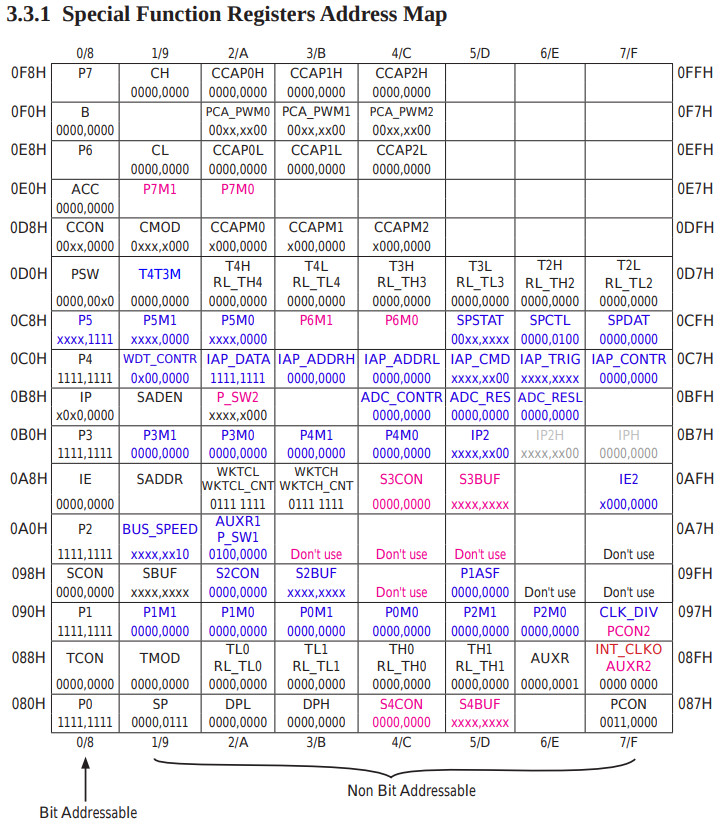

參考資訊：
https://datasheet4u.com/datasheet-pdf-file/771731/STCMCU/STC15L101E/1
STC15W104並沒有支援UART功能，只有STC15W204才有支援
| Symbol | Address | Description |
|---|---|---|
| SP | 0x81 | Stack Pointer |
| DPL | 0x82 | Data Pointer Low |
| DPH | 0x83 | Data Pointer High |
| PCON | 0x87 | Power Control |
| TCON | 0x88 | Timer Control |
| TMOD | 0x89 | Timer Mode |
| TL0 | 0x8A | Timer Low 0 |
| TL1 | 0x8B | Timer Low 1 |
| TH0 | 0x8C | Timer High 0 |
| TH1 | 0x8D | Timer High 1 |
| AUXR | 0x8E | Auxiliary |
| INT_CLKO | 0x8F | External Interrupt Enable and Clock Output |
| CLK_DIV | 0x97 | Clock Divider |
| IE | 0xA8 | Interrupt Enable |
| P3 | 0xB0 | Port 3 |
| P3M1 | 0xB1 | P3 Config 1 |
| P3M0 | 0xB2 | P3 Config 0 |
| IP | 0xB8 | Interrupt Priority |
| IRC_CLKO | 0xBB | Internal RC Clock Output |
| WDT_CONTR | 0xC1 | Watchdog Timer Control |
| IAP_DATA | 0xC2 | ISP Flash Data |
| IAP_ADDRH | 0xC3 | ISP Flash Address High |
| IAP_ADDRL | 0xC4 | ISP Flash Address Low |
| IAP_CMD | 0xC5 | ISP Flash Command |
| IAP_TRIG | 0xC6 | ISP Flash Trigger |
| IAP_CONTR | 0xC7 | ISP Flash Control |
| PSW | 0xD0 | Program Status |
| A | 0xE0 | Accumulator |
| B | 0xF0 | B |
